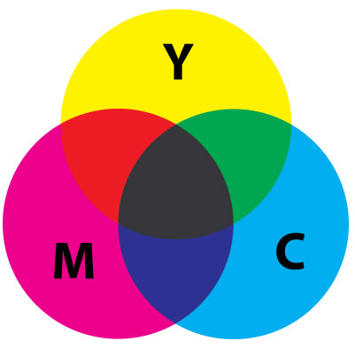

Produktionsmodeller bliver brugt til at styre hvordan man sætter en opgave med kunden i gang, det handler om at få planlagt det konkrete produkt man gerne vil afsende, og at blive konkret om indholdet i samarbejde med kunden.
- Hvem er målgruppen?
- Er kommunikation løsningen?
- Hvad er budskabet?
- Hvad er mediet?
- Hvilken effekt skal produktet have hos målgruppen?
- Hvad er formålet med effekten hos målgruppen?
- Hvem er afsender?
- Indgår produktet i en strategi eller politik?
- Hvilken effekt skal produktet have hos afsenderen?
- Hvad er formålet med effekten hos afsenderen?
- Hvordan påvirkes målgruppen ellers af lignende budskaber?
- Intimideres målgruppen?
- Er produktet lavet før?
- Hvor, hvornår og hvordan skal målgruppen opleve produktet?
- Hvordan skal produktet distribueres?
- Hvilke genrer skal bruges?
- Hvilke fortællemåder skal bruges?
- Hvilke færdigheder skal producenten have?
- Hvilken viden skal producenten have?
- Hvor meget skal der med?
- Hvilket apparatur er nødvendigt?
- Hvad må det koste?
- Hvilke juridiske problemer er der også?
- Hvilke etiske problemer kan der opstå?
- Hvad skal produktet hedde?
- Hvordan er tidsplanen?
- Hvordan informeres rekvirenten?
- Hvordan skal produktet afprøves?
- Hvordan laves produktet nemmest?

Den nye bolle model
Denne model er lavet af Bruno Ingemann, og formålet er at udtænke og beskrive en kommunikationsplan for et medieprodukt. Her ligger fokus på relationer som kan give indflydelse og forventninger til produktet. I modellen tager man altid udgangspunkt i det der på forhånd er givet. Formål, præmis og effekt er noget der skal afklares igennem denne model. Igennem hele processen holder man oplevelsen som man ønsker at give modtageren på, man skal hele tiden være sikker på at der er sammenhæng mellem tingene.
Website struktur
Sekvens:
Den mest enkelte måde at organisere information på, sekvens begrænser brugeres mulighed til et klik på forsæt – den er dog let at forstå og designe.
Hierarki:
Dette er den mest anvendte struktur, da den er god til at organisere mange oplysninger. Den mest enkle struktur har form som en stjerne, da der er en forside med links til et antal sider. Men den meste brugte er opbygget som et hierarki med mange forskellige lag. De fleste sider bruger globale navigeringslinks, for at give brugeren en god og nem mulighed for at finde rundt på siden.
Webstruktur:
denne struktur har kun få begrænsninger ved i brugerens bevægelsesmønster, målet er at brugeren kan bruge siden i et unikt mønster. Ulempe er dog også at siden hurtigt kan virke forvirrende og svært at forstå for brugeren.
Hvis man skal kigge på praksis, så bliver de tre forskellige strukturer kombineret. Den hierarkiske bliver brugt som grundstruktur, den sekventielle struktur bliver brugt til transaktioner på siden og den weblignende struktur giver brugeren mulighed for at hoppe på tværs af siden.
Visualisering af strukturen
Her har vi brugt wireframes igennem forskellige projekter, og det skaber en grobund for det visuelle design, og giver en ide om hvilken retning siden går i. ”Wireframes danner udgangspunkt for at lave det skelet, som siderne bygges op over. Dermed sikres konsistens i struktur og indhold på tværs af sider og i forhold til informationsstrukturen”.
Opbygningen af siden er bedst hvis det tager udgangspunkt i det brugeren forventer. Brugeren går ind med en klar forventning om hvilke elementer der skal findes på siden, og hvordan de skal se ud – at leve op til de forventninger gør det meget nemmere for brugeren at navigere rundt på siden.
Navigeringsdesign fokuserer på 3 elementer:
- Orientering: Hvor er jeg?
- Rutebeslutning: Hvilken vej vælger jeg?
- Mental mapping: Hvordan husker jeg hvor jeg har vært, så jeg kan finde tilbage eller skyde genvej?
Global navigering
Bruges til at beskrive de navigeringselementer der skal være på hver side, ved at være gentagende her får brugeren en oplevelse af at være på samme side hele tiden – betyder også at brugeren bruger mindre tid på at finde ud af hjemmesiden.
Der bør inkluderes 4 forskellige elementer site-id’et, den primære navigering (sections, links til hovedsiderne og andre niveuaer), utlities (links til vigtige elementer på siden) og søgning.
Gangstertesten
Gangstertesten har sit navn, fordi man skal forestille sig at man ligger i et bagagerum i en bil, og pludselige bliver lukket ud, hvorefter man skal orientere sig. Testen kan bruges til at teste informationsarkitekturen og navigeringen, og kan anvendes på mange stadier i udviklingen af siden.
Her skal man ret hurtigt kunne finde de elementer jeg beskrev i globalnavigering, og hvis man kan det, består den testen.